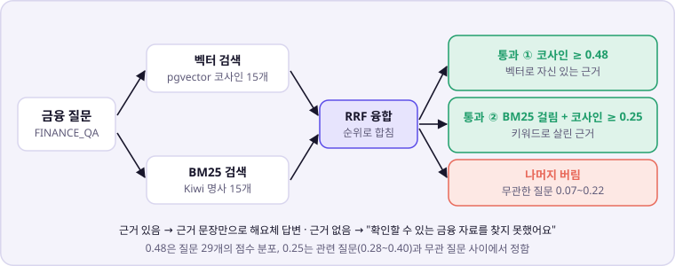

실패한 질문 8개를 재현해 두 갈래로 나눴습니다. 짧고 사전적인 질문을 벡터 하나로는 안정적으로 못 잡는 검색 문제와, 정의 문단이 아예 없는 코퍼스 문제입니다. 뒤쪽은 고등학교 금융 교과서를 추가로 적재해 상당 부분 보완했습니다.
해결
BM25 키워드 검색을 더해 순위로 합쳤습니다. 그런데 처음 붙였을 때 "김치찌개는 뭐임"에 레시피를 답하는 오탐이 생겼습니다. 코퍼스가 작아(861개) BM25 점수만으로는 무관한 질문을 못 거르는 것을 확인하고, BM25로 살린 후보도 코사인 0.25를 넘어야 통과하게 했습니다.

질문
벡터 전용
하이브리드 + 이중 게이트
적금이란
차단 (0.4776)
정답 문단
복리는 뭐야
엉뚱한 결과
정답 문단
신용점수는 어떻게 정해져?
엉뚱한 결과
정답 문단
김치찌개는 뭐임 (무관)
낮은 점수로 차단
계속 차단
실패하던 정답형 질문 8개 모두 정답 문단을 찾았고(인플레이션은 문서 보강 병행), 무관한 질문 4개는 계속 차단됐습니다.
3. 소비 분석 채팅이 틀린 금융 한도를 답하던 문제 — 숫자 가드 확장
범위 제한 지시문 · 한글 단위 숫자 검사
문제
운영 서버의 소비 분석 채팅에서 "예금자보호 한도가 얼마예요?"처럼 집계와 무관한 질문에 LLM이 사전 지식으로 "5천만 원"이라고 답했습니다. 실제로는 2025년 9월부터 1억 원입니다.
원인
지시문에 범위 밖 질문을 다루는 규칙이 없었고, 근거 밖 숫자를 막는 검사는 "5천만"을 한 자릿수 5로 보고 건너뛰어 한글 단위 표기를 통과시켰습니다.
해결
범위 밖 질문은 고정 안내로 돌리고, 숫자 검사가 천·만·억이 이어진 표기를 실제 배수로 환산해 집계 근거와 대조하게 했습니다.
틀린 한도를 답하던 경로를 막고, "5천만 원", "1억 원" 같은 표기도 근거와 대조합니다.
4. 6가지 AI 작업을 실제 LLM으로 검증하기
실측 재현 · 결정론적 폴백 · 말투 규칙
단위 테스트는 LLM을 가짜로 바꿔 돌리므로, 실제 모델이 어떻게 답하는지는 따로 재야 했습니다. 작업마다 실제 LLM을 반복 호출해 실패를 재현하고, 고친 뒤 같은 조건으로 다시 쟀습니다.
작업
발견한 문제
수정 전
수정 후
행동 제안
비율·연 환산을 LLM이 직접 계산해 근거 밖 숫자 생성
2/2 발생
6/6 폴백 전환
묶음 이름
빈 입력에서 문장이 단어 중간에 잘림
5/5 발생
LLM 호출 생략, 3/3 정상
분석 설명
해요체 대신 반말이 섞임
5/8
0/10
소비 분석
사용자가 반말로 물으면 답도 반말
11/11
13/14 정상
추상적인 규칙 한 줄("반말이어도 해요체로")은 6/6 효과가 없었고, 금지할 표현을 예시로 직접 적자 13/14로 개선됐습니다. 프롬프트도 재현해서 재야 한다는 것을 배웠습니다.
실제 응답 예시
2026-10-07, 검증용 로컬 화면에서 실제 OpenAI와 금융 문서 청크 862개로 받은 응답입니다.
적금이란?
적금은 계약금액과 계약기간을 정하고, 예금주가 일정 금액을 정기적으로 납입하면 만기에 계약금액을 지급하는 적립식 예금이에요. 정액적립식과 자유적립식으로 나눌 수 있고, 만기 이전에 해약하면 약정이자보다 낮은 이자를 지급받거나 이자가 없을 수도 있어요.근거 문단을 찾은 경우 — 검색된 근거를 바탕으로 답변
김치찌개는 뭐임
확인할 수 있는 금융 자료를 찾지 못했어요. 다른 질문으로 다시 물어봐 주세요.근거가 없는 경우 — LLM을 부르지 않고 고정 문장
남은 한계
시점이 있는 질문이 문제입니다. 같은 날 "미국 기준금리 전망"을 물었더니 코퍼스 속 예시 수치를 근거로 답했습니다. 하한만 쓰던 때(청크 741개)는 막혔던 질문이고, 하이브리드 때문인지 추가된 문서 때문인지는 아직 가려내지 못했습니다. 실시간 데이터성 질문의 예시 수치 혼동은 레포 개발 문서에도 알려진 한계로 적혀 있습니다.